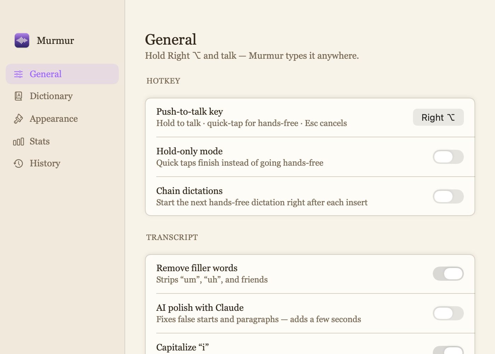
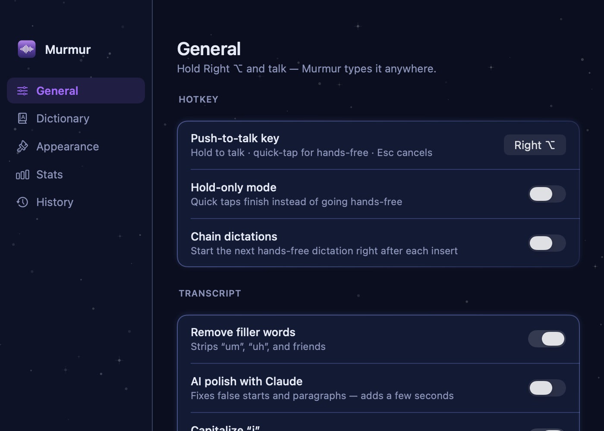
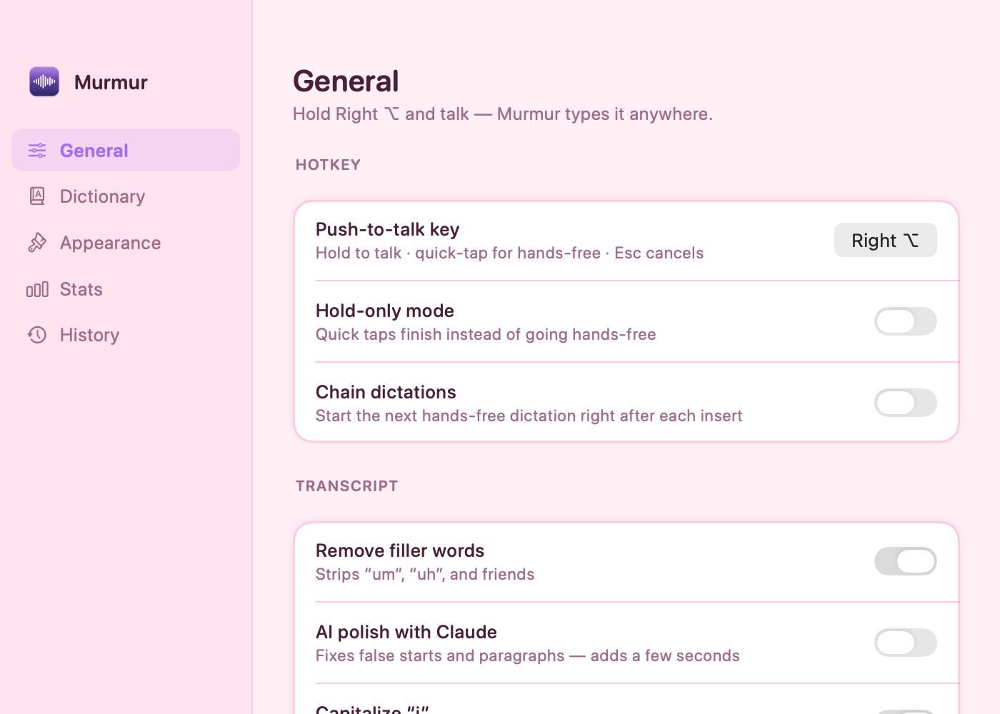
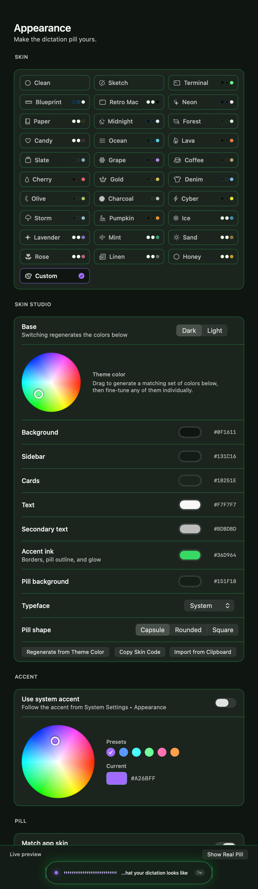
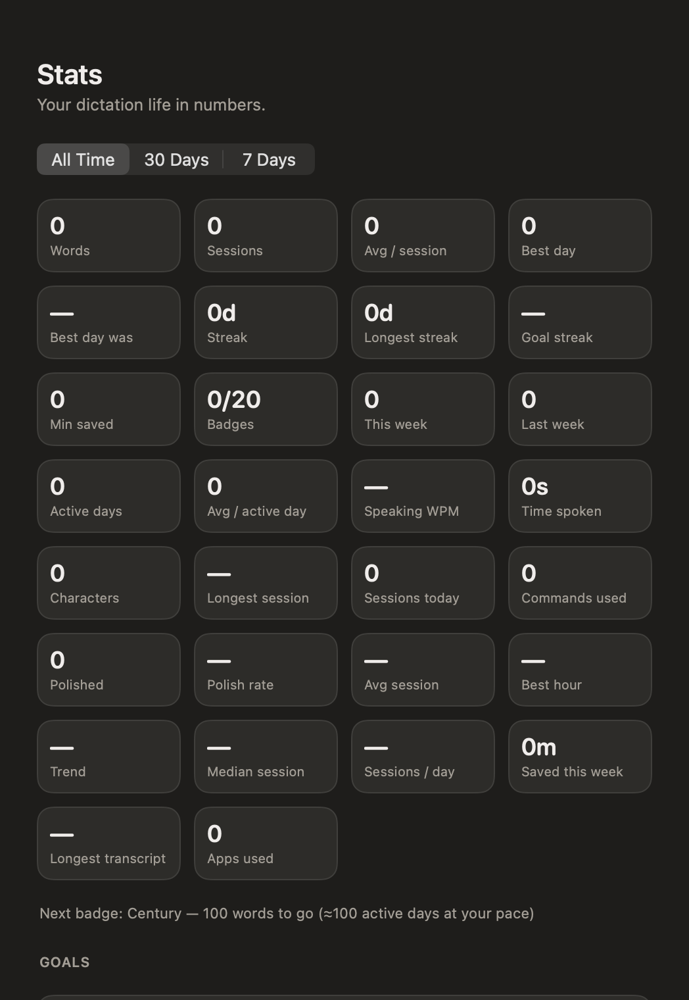

Murmur is free, open-source dictation for your Mac —
private, on-device, and absurdly customizable.
Hold Right ⌥ (or any key you pick) and talk — Murmur types it into whatever app you're using. Quick-tap for hands-free. Esc cancels. That's the whole learning curve.
Apple's on-device recognizer transcribes locally. Your voice never leaves your Mac — no accounts, no cloud, no telemetry.
Optionally pipe transcripts through Claude to fix false starts — with a different personality per app. Casual with emojis in Slack, formal in Mail. Bring your own API key (kept in the Keychain) or use the Claude CLI.
Terminal, Blueprint, Sketch, Midnight, Candy… or design your own: every color editable, shareable as a skin code.
Spoken phrases become snippets — “my email” types your address. Entries double as recognizer hints so unusual names actually get heard. Regex mode for the brave.
“New line”, “scratch that”, “fire emoji”, spoken punctuation, spelled-out numbers to digits, filler-word removal, and a live test box.
Streaks, words-per-minute, heatmaps, hour-of-day charts, top apps, goals — your dictation life in numbers, all stored locally.
Search, pin, filter by app, re-polish in any tone, export Markdown/JSON — or pause history entirely.
Per-app rules, chain dictation, click-to-finish pill, quiet hours, weekly auto-backups… if you wished it were an option, it probably is.
MIT licensed and built in the open. No trial, no “pro” tier, no upsell — it's just yours.



Every skin restyles the whole app and the dictation pill — palettes, typefaces, textures. The Skin Studio lets you design your own from a color wheel, fine-tune every surface, and share it as a one-line code.


Murmur was built the paranoid way, because dictation hears everything.
Speech-to-text runs on Apple's local recognizer whenever the language supports it. Airplane mode? Still works.
If you enable AI polish, your Anthropic key lives only in the macOS Keychain — never in settings files, backups, or logs.
Pause history, redact numbers, exclude password managers from auto-insert, auto-cancel when the screen locks.
Every line of Swift is on GitHub under MIT. Don't trust — read.
Download the DMG from the latest release and drag Murmur into Applications.
Grant three permissions when the welcome window asks: Microphone, Speech Recognition, and Accessibility (that last one lets Murmur type for you).
Hold Right ⌥ and say something. Release, and watch it land in whatever app you're in. Quick-tap instead for hands-free.